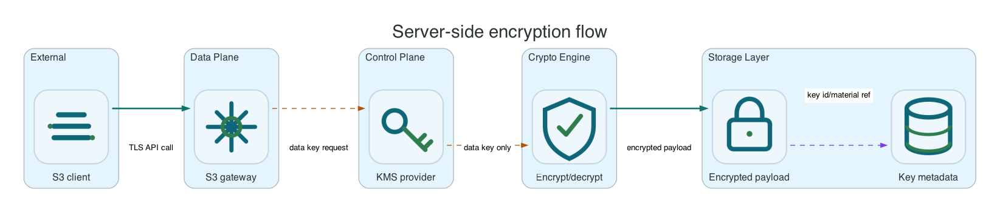

Encryption And KMS-Compatible Wrapping
New buckets default to SSE-S3. SSE-KMS and DSSE-KMS depend on the runtime KMS provider configured by S3Storage.
Common AWS CLI setup
Run this once for the target bucket. Replace li9-s3-runtime and app-data with your namespace and S3Bucket resource name.
export NS=li9-s3-runtime
export BUCKET_CR=app-data
export BUCKET="$(oc -n "$NS" get s3bucket "$BUCKET_CR" -o jsonpath='{.status.bucketName}')"
export SECRET="$(oc -n "$NS" get s3bucket "$BUCKET_CR" -o jsonpath='{.status.secretName}')"
export ENDPOINT="$(oc -n "$NS" get secret "$SECRET" -o jsonpath='{.data.AWS_ENDPOINT_URL}' | base64 -d)"
export AWS_ACCESS_KEY_ID="$(oc -n "$NS" get secret "$SECRET" -o jsonpath='{.data.AWS_ACCESS_KEY_ID}' | base64 -d)"
export AWS_SECRET_ACCESS_KEY="$(oc -n "$NS" get secret "$SECRET" -o jsonpath='{.data.AWS_SECRET_ACCESS_KEY}' | base64 -d)"
export AWS_REGION="$(oc -n "$NS" get secret "$SECRET" -o jsonpath='{.data.AWS_REGION}' 2>/dev/null | base64 -d || true)"
export AWS_REGION="${AWS_REGION:-us-east-1}"
export AWS_EC2_METADATA_DISABLED=true
li9s3() {
aws --endpoint-url "$ENDPOINT" --region "$AWS_REGION" --no-verify-ssl s3api "$@"
}To verify the setup, run:
li9s3 head-bucket --bucket "$BUCKET"
li9s3 list-objects-v2 --bucket "$BUCKET" --max-keys 1Encryption And KMS-Compatible Wrapping
New buckets default to SSE-S3 so ordinary writes are envelope-encrypted even when the client does not set encryption headers. SSE-KMS and DSSE-KMS use the runtime KMS provider configured by the installation. The KMS service wraps data keys only; it does not store object payloads. Internal service calls use mTLS, and master-key material is supplied through generated or existing Kubernetes Secrets for operator installs.

| Mode | Client Shape | Operational Requirement |
|---|---|---|
| SSE-S3 | --server-side-encryption AES256 or implicit bucket default. | Local wrapping key is available to object-service. |
| SSE-KMS | --server-side-encryption aws:kms with optional key ID and encryption context. | KMS provider is configured and reachable. |
| DSSE-KMS | --server-side-encryption aws:kms:dsse. | KMS provider supports the configured wrapping operations. |
| SSE-C | Customer key headers on write and read paths. | Bucket encryption config explicitly allows SSE-C by blocking NONE instead of blocking SSE-C. |
li9s3 get-bucket-encryption --bucket "$BUCKET"
printf 'encrypted\n' > /tmp/encrypted.txt
li9s3 put-object --bucket "$BUCKET" --key encryption/sse-s3.txt --body /tmp/encrypted.txt --server-side-encryption AES256
li9s3 head-object --bucket "$BUCKET" --key encryption/sse-s3.txt --query ServerSideEncryption
li9s3 put-object \
--bucket "$BUCKET" \
--key encryption/sse-kms.txt \
--body /tmp/encrypted.txt \
--server-side-encryption aws:kms \
--ssekms-key-id li9/default
li9s3 head-object --bucket "$BUCKET" --key encryption/sse-kms.txt --query '{sse:ServerSideEncryption,kms:SSEKMSKeyId}'SSE-C Compatibility Test
Use SSE-C only for clients that already require customer-provided keys. The key is required again on reads and checksum reads. Li9 S3 validates the key MD5 and never stores the customer key.
openssl rand 32 > /tmp/ssec.key
li9s3 put-object \
--bucket "$BUCKET" \
--key encryption/sse-c.txt \
--body /tmp/encrypted.txt \
--sse-customer-algorithm AES256 \
--sse-customer-key fileb:///tmp/ssec.key
li9s3 head-object \
--bucket "$BUCKET" \
--key encryption/sse-c.txt \
--sse-customer-algorithm AES256 \
--sse-customer-key fileb:///tmp/ssec.keyFailure Behavior
If KMS is unavailable, KMS-encrypted reads and new KMS-encrypted writes fail closed with S3 XML errors instead of returning corrupted or unencrypted data. Ordinary metadata reads can still return metadata when they do not require decrypting object payload or checksum material. Monitor KMS audit outbox and DLQ metrics as part of the storage health dashboard.